舉辦『「Main Interlude 徳川廻天迷宮 大奥」發佈記念宣傳活動』！
◆宣傳活動舉辦期間◆
2022年7月13日(三) 17:00～7月20日(三) 11:59
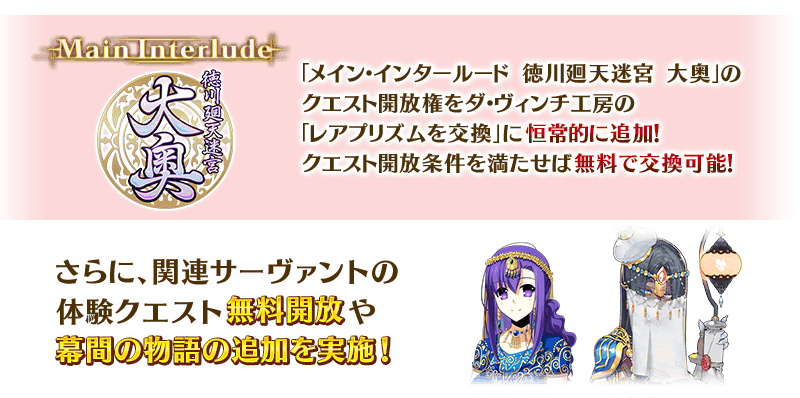
※本頁面皆為開發中圖片。會有與實際圖片相異的情況。 ※在2018年12月31日(二) 23:00以後新配信的主線故事及期間限定活動、一部份關卡、宣傳活動及召喚中，會顯示隱藏真名的對象從者真名。
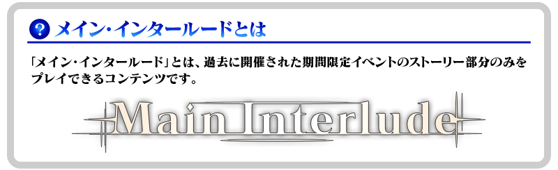
「Main Interlude 徳川廻天迷宮 大奥」永久追加！
「Main Interlude 徳川廻天迷宮 大奥」的關卡開放權在達文西工房的「稀有稜鏡交換」永久追加い。 ※「Main Interlude 徳川廻天迷宮 大奥」是伴隨在2020年舉辦的期間限定活動「復刻:徳川廻天迷宮 大奥」的Main Interlude化，有一部份調整。
滿足下述的交換條件後，才能於達文西工房的「稀有稜鏡交換」交換。 並且，交換所需的稀有稜鏡為「0個」，滿足關卡開放權的交換條件就能免費交換。
◆關卡開放權交換條件◆
滿足以下條件的御主才能交換
・通過第2部 第3章「Lostbelt No.3 人智統合真國 SIN 紅之月下美人」
・通過「深海電腦樂土 SE.RA.PH」的「終幕」
※有通過『特別活動「復刻版:深海電腦樂土 SE.RA.PH -Second Ballet-」』「Main Interlude 深海電腦樂土 SE.RA.PH」任一「終幕」的情況即可滿足條件。
※不需要通過亞種特異點(從Ⅰ到Ⅳ)。
◆追加時間◆
2022年7月13日(三) 17:00～
◆追加道具(永久)◆
| 追加道具 | 能交換次數 | 1次交換所需的 稀有稜鏡數 |
|---|---|---|
| 「Main Interlude 徳川廻天迷宮 大奥」關卡開放權 | 1次 | 0個 |
※在「稀有稜鏡交換」追加的「Main Interlude 徳川廻天迷宮 大奥」關卡開放權為永久，沒有交換期限。
◆有關「Main Interlude 徳川廻天迷宮 大奥」的注意◆
※就算已經通過下述的期間限定活動的情況也可遊玩。
・期間限定活動「徳川廻天迷宮 大奥」
・期間限定活動「復刻:徳川廻天迷宮 大奥」
※故事與「復刻:徳川廻天迷宮 大奥」同樣內容。
※在過去舉辦的「徳川廻天迷宮 大奥」「復刻:徳川廻天迷宮 大奥」獲得過「聖杯」的情況，「Main Interlude 徳川廻天迷宮 大奥」中會以「傳承結晶」代替「聖杯」做為通過報酬。
※在過去舉辦獲得過「指令紋章」的情況，「Main Interlude 徳川廻天迷宮 大奥」的對象關卡中可獲得稀有稜鏡或魔力稜鏡代替「指令紋章」。
※無法獲得一部份道具。
※在「Main Interlude 徳川廻天迷宮 大奥」中「無戰鬥」的探索關卡，不計算在每日任務、教學任務的「通過〇次關卡」。
※在關卡通過時可獲得的戰利品及關卡通過報酬與過去舉辦的「徳川廻天迷宮 大奥」及「復刻:徳川廻天迷宮 大奥」報酬不同。
※無法遊玩自由關卡等一部份的關卡。
※適用的支援編制設定成「平常關卡」。
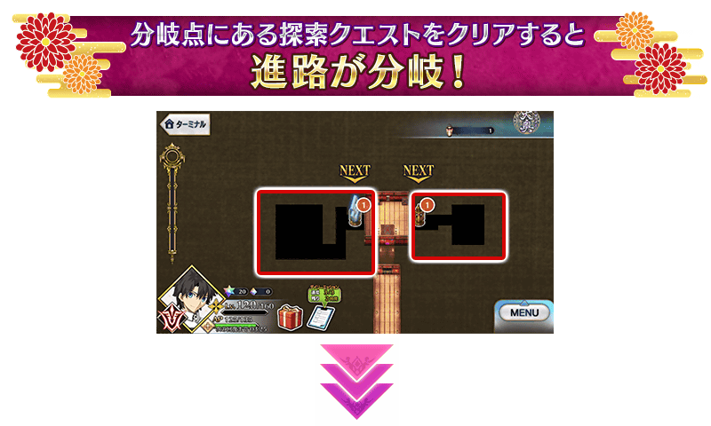 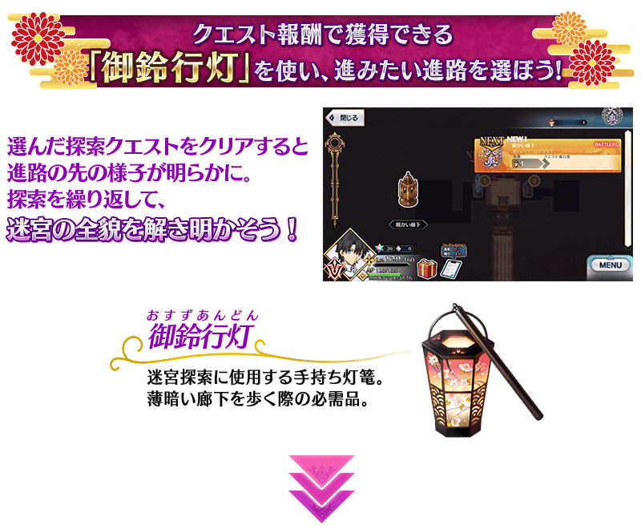
關於探索道路的選擇
「Main Interlude 徳川廻天迷宮 大奥」中，在特定的時間點上將出現多個地點。通過往該道路推進的探索關卡即可向前推進。
消耗可靠通過關卡所獲得的「御鈴行燈」施行探索關卡的話，會出現新的地點可繼續前進。
能在迷宮內多條道路之中選擇喜愛的一條路，自由地探索。
但是，根據道路會有繼續前進與走到死路的結果。
由於迷宮內暗藏著選擇前進道路的提示，以各式各樣的情報為依據，持續發覺出前往大奥最深處的道路吧！
※消耗「御鈴行燈」的戰鬥中敗北或撤退的情況，不會消耗「御鈴行燈」。 ※「無戰鬥」的探索關卡，不計算在每日任務、教學任務的「通過〇次關卡」。
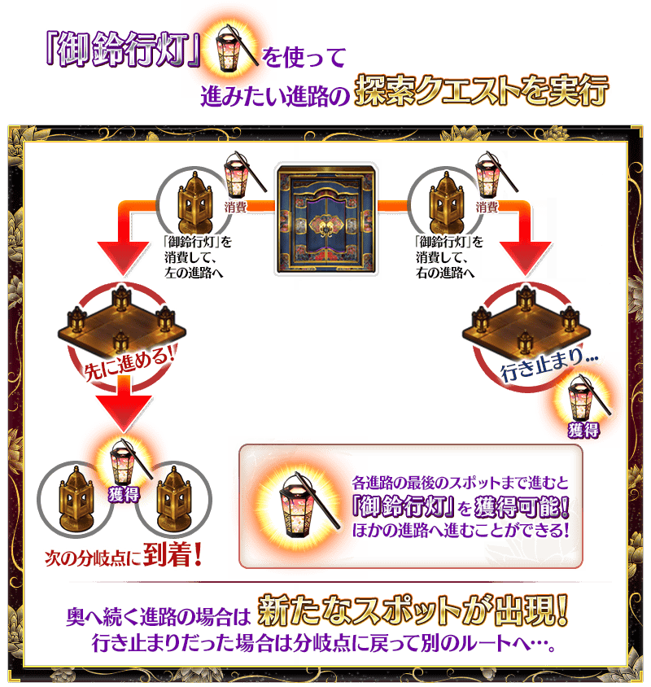
主線關卡的戰鬥中，御主技能變成特別的技能！
探索迷宮的話可入手「印籠」。
入手「印籠」後，在活動關卡的戰鬥中可使用的御主技能，會從魔術禮裝變化成「印籠」獨自的技能。
※「印籠」入手後，無法使用裝備魔術禮裝的御主技能，魔術禮裝EXP是裝備的魔術禮裝獲得。 ※「Main Interlude 徳川廻天迷宮 大奥」以外的關卡中，御主技能不會變化。
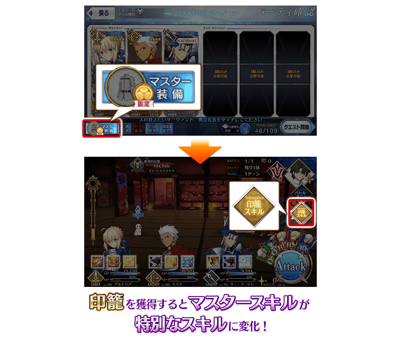
|
★★★★★SSR
|
| 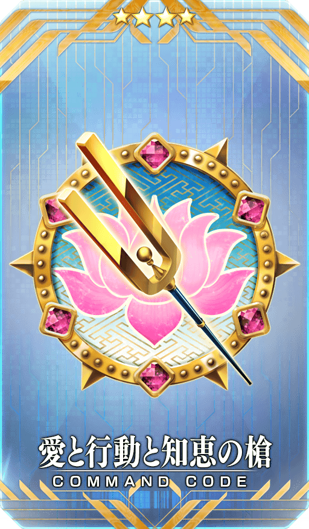 |
★★★★SR
|
| 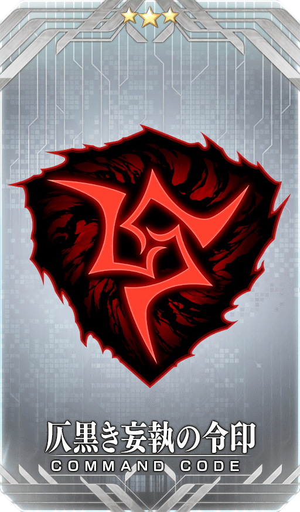 |
★★★R
|

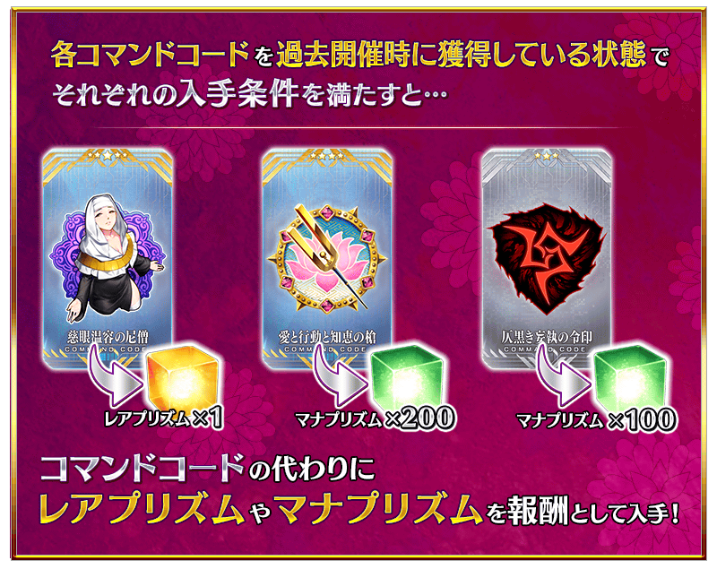
◆關於報酬指令紋章的注意◆
在2019年舉辦的期間限定活動「徳川廻天迷宮 大奥」及在2020年的期間限定活動「復刻:徳川廻天迷宮 大奥」中獲得過同樣指令紋章的情況，可獲得稀有稜鏡或魔力稜鏡代替指令紋章。
※對象指令紋章的稀有度對應的可獲得報酬不同。
※就算靈基變還(販賣)在期間限定活動「徳川廻天迷宮 大奥」及在2020年的期間限定活動「復刻:徳川廻天迷宮 大奥」獲得過的各指令紋章而消失的情況，在「Main Interlude 徳川廻天迷宮 大奥」中的報酬仍會變成稀有稜鏡和魔力稜鏡。
可在達文西工房的「稀有稜鏡交換」開放的「帕爾瓦蒂體驗關卡」，通過第2部 第3章「Lostbelt No.3 人智統合真國 SIN 紅之月下美人」後變得可免費開放！
可迎接「★4(SR)帕爾瓦蒂」當支援成員，挑戰關卡！
體驗對象從者技能和寶具吧！
※已經在「稀有稜鏡交換」交換過的情況，會返還交換使用的同數量稀有稜鏡到禮物箱。 ※就算在滿足免費開放的條件前在「稀有稜鏡交換」交換該關卡的情況，通過第2部 第3章「Lostbelt No.3 人智統合真國 SIN 紅之月下美人」的條件滿足的時間點會返還交換使用的稀有稜鏡。
◆免費開放時間◆
2022年7月13日(三) 17:00～
※「帕爾瓦蒂體驗關卡」關卡開放權的免費開放沒有期限。
◆免費開放條件◆
滿足以下條件的御主才能免費交換
・通過第2部 第3章「Lostbelt No.3 人智統合真國 SIN 紅之月下美人」
◆關卡通過報酬◆
呼符 1張
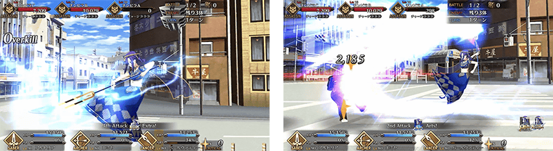
「★5(SSR)雪赫拉莎德(不夜城的Caster)」的新「幕間物語」，在迦勒底之門永久追加。
能入手聖晶石2個做為關卡通過報酬。
另外，『「Main Interlude 徳川廻天迷宮 大奥」發佈記念宣傳活動』期間中，就算未持有「★5(SSR)雪赫拉莎德(不夜城的Caster)」也能開放「幕間物語」！
由於開放條件也期間限定變成特別開放條件，務必藉此機會通過「★5(SSR)雪赫拉莎德(不夜城的Caster)」的「幕間物語」吧！
※超過『「Main Interlude 徳川廻天迷宮 大奥」發佈記念宣傳活動』期間限定開放期間的情況，「★5(SSR)雪赫拉莎德(不夜城的Caster)」的「幕間物語」的開放條件會切換成平常的開放條件。
※關卡通過時的報酬內容沒有變化。
◆追加時間◆
2022年7月13日(三) 17:00～
◆『「Main Interlude 徳川廻天迷宮 大奥」發佈記念宣傳活動』期間限定開放期間◆
2022年7月13日(三) 17:00～7月20日(三) 11:59
|
◆『「Main Interlude 徳川廻天迷宮 大奥」發佈記念宣傳活動』期間限定開放條件◆
◆平常開放條件◆ ◆關卡通過報酬◆ |
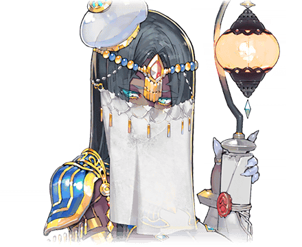 |
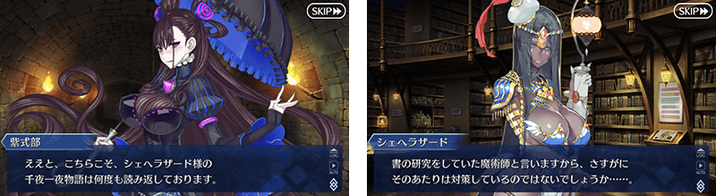
◆「幕間物語」平常開放的注意◆
※未持有「★5(SSR)雪赫拉莎德(不夜城的Caster)」的情況，關卡不會出現。
※關卡沒有舉辦期限。
※在期間限定開放期間中，已經通過「★5(SSR)雪赫拉莎德(不夜城的Caster)」幕間物語的情況，無法再度遊玩。
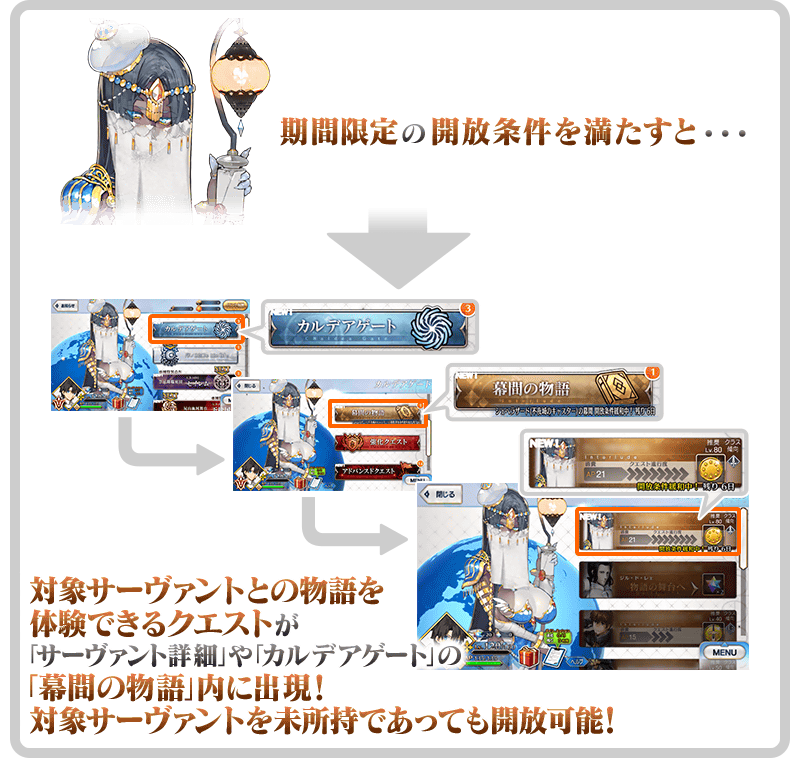
「★5(SSR)雪赫拉莎德(不夜城的Caster)」的「幕間物語」，以期間限定變成「就算未持有對象從者也能開放」！
「幕間物語」的開放條件也與平常時的開放條件不同，會變成期間限定的特別開放條件。
務必藉此機會通過對象從者的「幕間物語」吧！
◆舉辦期間◆
2022年7月13日(三) 17:00～7月20日(三) 11:59
※對象從者有多個「幕間物語」的情況，全部的幕間物語皆為對象。 ※關卡通過時的報酬內容不會變化。 ※在有編制限制等需持有從者為前提的關卡中，未持有對象從者的情況，在隊伍編制時變得能選擇NPC。
【對象從者・幕間物語】
| 對象從者 | 對象 「幕間物語」 |
通過報酬 | 期間限定 開放條件 |
|
|---|---|---|---|---|
|
★5(SSR) 雪赫拉莎德 (不夜城的Caster) |
第1節 |

|
技能強化 | 通過亞種特異點Ⅱ |
| 第2節NEW! |

|
聖晶石 2個 | 通過幕間第1節 | |
※在滿足期間限定的開放條件後通過「幕間物語」時未持有對象從者的情況，在入手對象從者的時間點會反映強化內容。 ※對象從者的「幕間物語」就算在未持有的狀態下通過的情況，會計算在Extra任務的進行度。 ※對象從者的「幕間物語」，在未通過的狀態超過舉辦期間的情況，對象從者的「幕間物語」會回到未開放，切換成平常的開放條件。 ※關卡通過時的報酬內容沒有變化。 ※已經通過對象從者的幕間物語的情況，無法再度遊玩。
其他還有，『「Main Interlude 徳川廻天迷宮 大奥」發佈記念Pick Up召喚』以期間限定同時舉辦！
關於詳情，請自下述橫幅確認。
■「Main Interlude 徳川廻天迷宮 大奥」發佈記念Pick Up召喚詳細情報